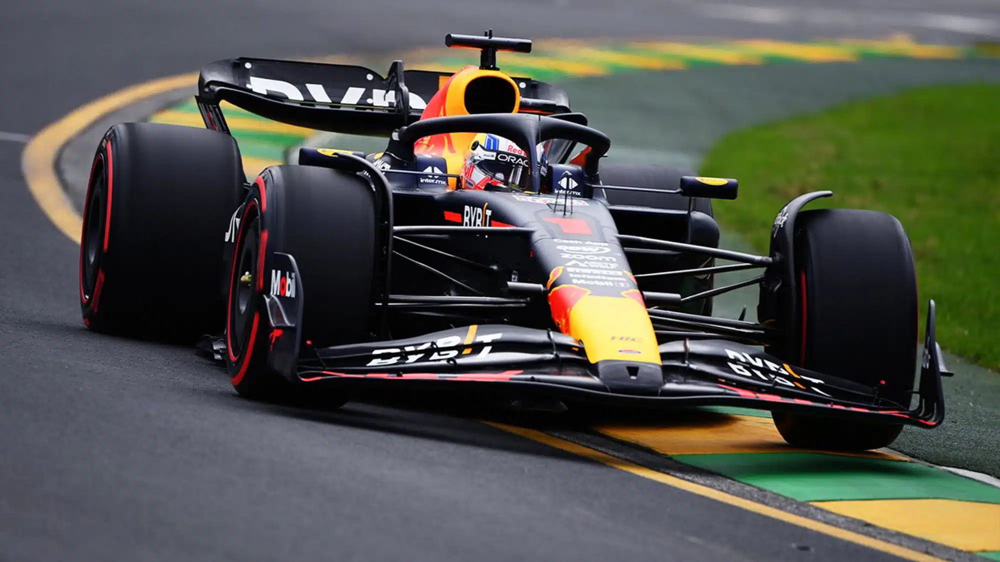

2023

Le più importanti scuderie che hanno partecipato al Campionato Mondiale di Formula1 2023 erano:
- Red Bull Racing
- Mercedes AMG
- Scuderia Ferrari
- McLaren F1 Team
Il mondiale di Formula1 2023 è stato vinto dal neocampione Max Verstappen che dopo 11 anni riporta la vittoria
in casa Red-Bull. Max vince i mondiali dal 2021 al 2023. In particolare il mondiale 2021 è stato uno dei più combattuti
della storia della Formula1 che ha visto come protagonisti due grandi piloti: Lewis Hamilton e Max Verstappen.
HOME
Tutti i diritti sono riservati
Sito realizzato da Boniotti Elisa, Lucchini Davide, Tassone Thomas